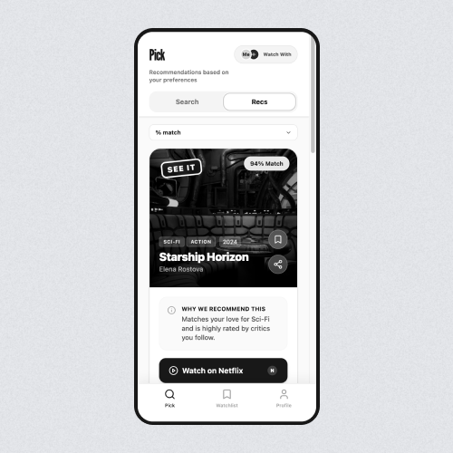
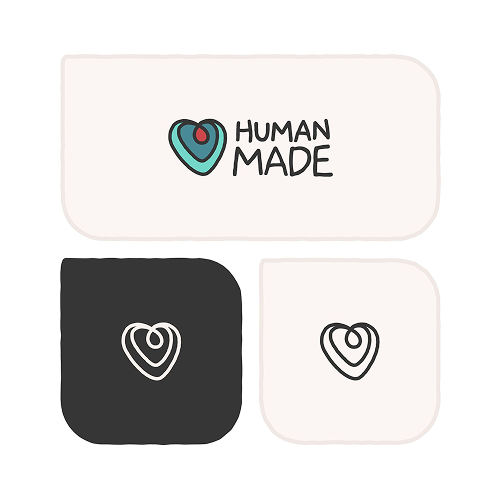
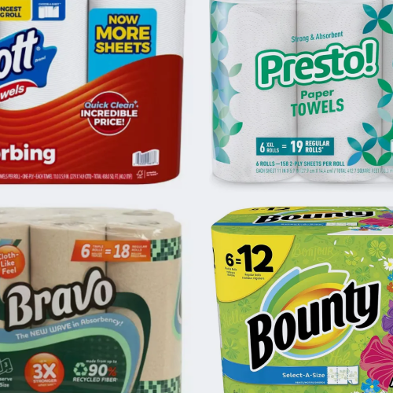
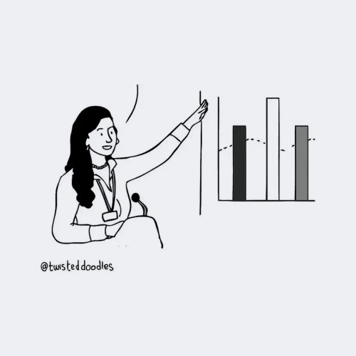
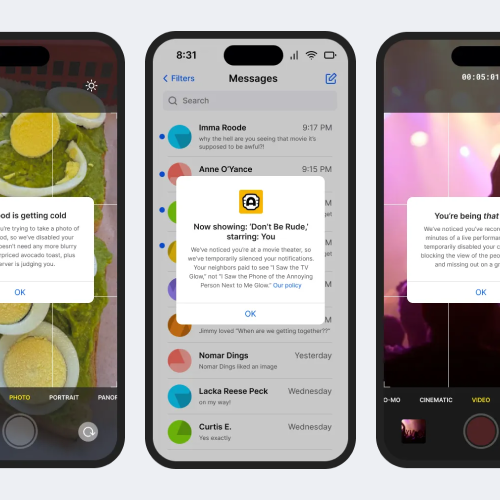
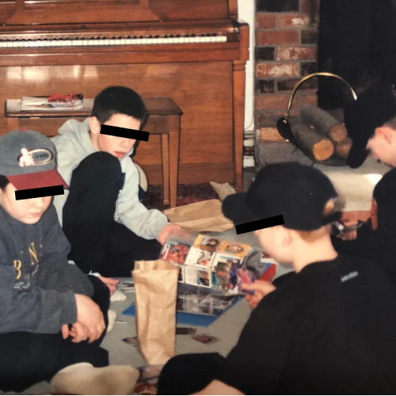
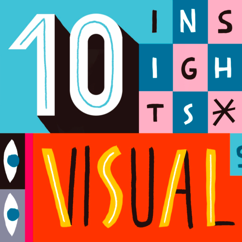
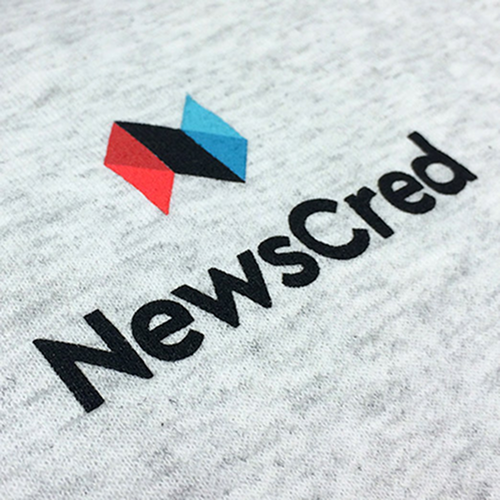
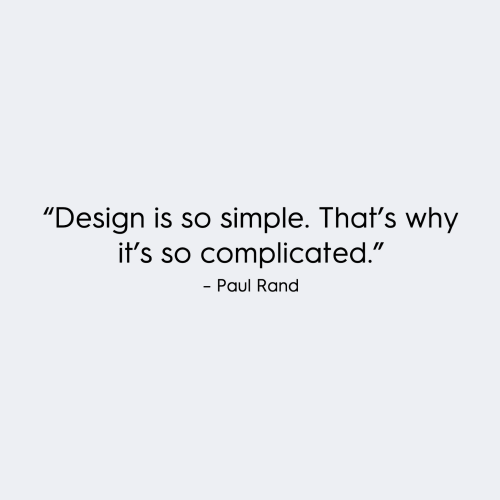
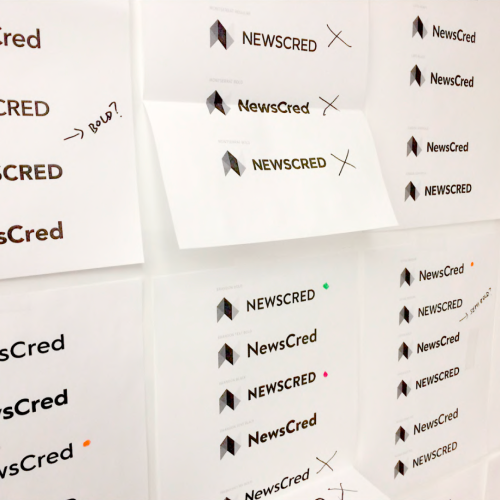

A living repository of essays, experiments, blog posts, rants, and interviews.
Designers are blessed with an innate ability to observe, empathetize, and solve. We're constantly tuned in to how we interact with our surroundings, pondering the design choices that led to those interactions, and devising solutions for improved experiences. I enjoy capturing and publishing my observations, as well as interviews with design leaders from companies like Squarespace and IBM.
-

New Apr 6, 2026 · LinkedIn · 1 minarrow_outwardPrototyping CinePick, a conceptual mobile app for film recommendations, using Figma Make AI
-

Mar 23, 2026 · LinkedIn · 2 minarrow_outwardHuman Made, a seal to differentiate between art created by people and AI
-

Aug 27, 2025 · Medium · 14 minarrow_outwardWhat The Heck Happened to Shopping?
-

Dec 22, 2024 · Medium · 8 minarrow_outwardThe Frustrating Irony of Corporate Acronyms (FICA)
-

Nov 2, 2024 · Medium · 5 minarrow_outwardHow Can Design Encourage Considerate Smartphone Behavior?
-
Jan 31, 2023 · Honeycomb blog · 6 minarrow_outward
Your Data Just Got a Facelift: Introducing Honeycomb's Data Visualization Updates (written with Sarrah Vesselov)
-

Nov 28, 2022 · Medium · 9 minarrow_outwardTrading Sports Cards Online: A Simple Solution to Improve the Collector's Experience
-
Jul 15, 2021 · Honeycomb blog · 7 minarrow_outward
Improving Our Typography to Optimize the Honeycomb User Experience
-

Feb 5, 2019 · Setka blogdownload10 Insights on the State of Visual Storytelling in 2019
-

Oct 20, 2017 · NewsCred blogdownloadHow We Relaunched NewsCred.com to Increase Traffic and Leads
-
Sep 19, 2016 · NewsCred blogdownload
Marketing Visionary: Q+A with Clair Byrd, Head of Marketing at InVision
-
August 10, 2016 · NewsCred blogdownload
How a Century-Old Tech Company Continues to Innovate: Q+A with Esteban Pérez-Hemminger, Design Lead at IBM
-
May 24, 2016 · NewsCred blogdownload
Interview with David Lee, Chief Creative Officer at Squarespace
-

Apr 27, 2016 · NewsCred blogdownload6 Inspirational Quotes from Our Marketing Team About, Well, Marketing
-

Mar 7, 2016 · NewsCred blogdownloadThe New NewsCred: How We Approached the Strategy Behind Our Rebrand
-
Sep 1, 2015 · NewsCred blogdownload
Why Brands Should Make Time For Type
-
Sep 29, 2014 · NewsCred blogdownload
Why Marketing Designers Need to Think Legibility Above All